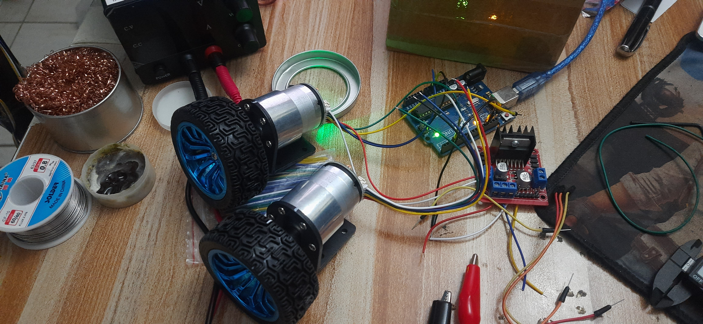
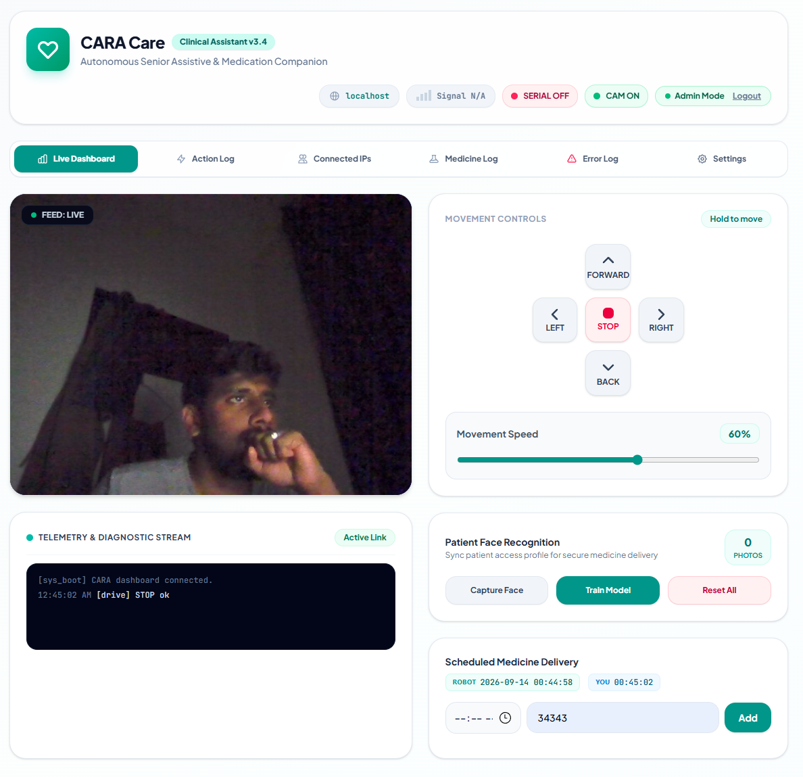
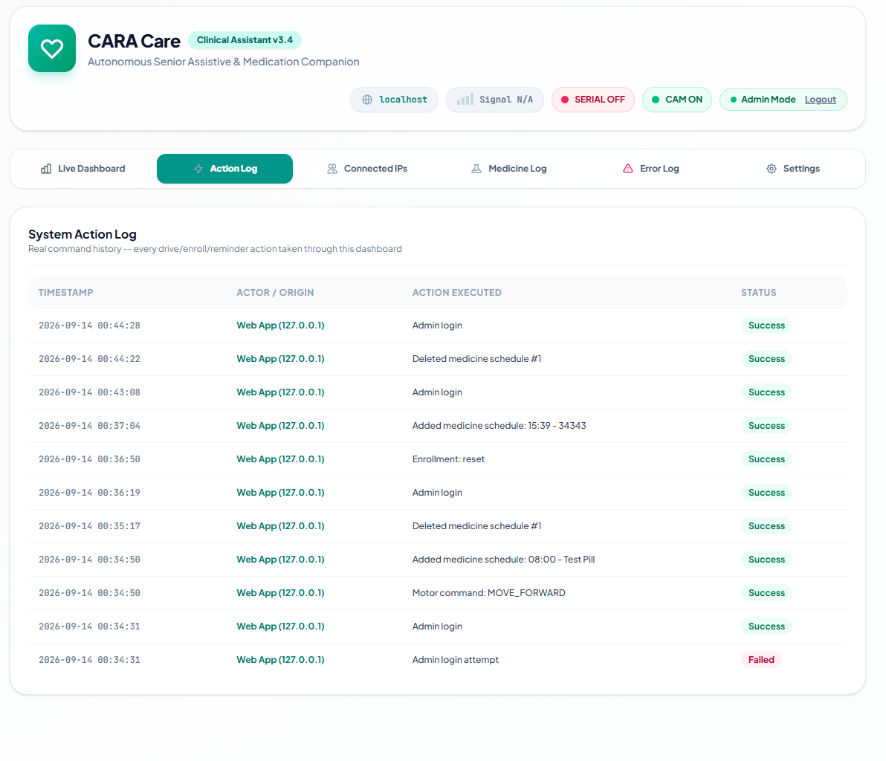
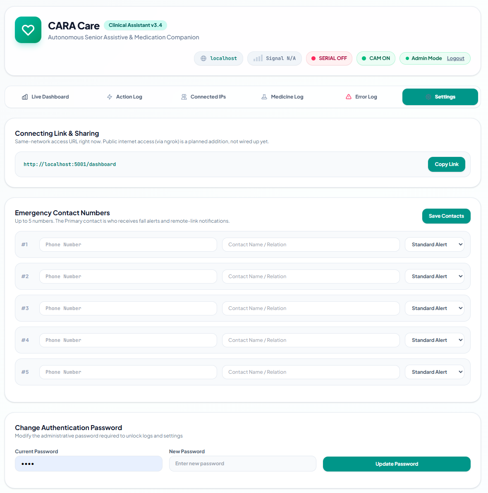
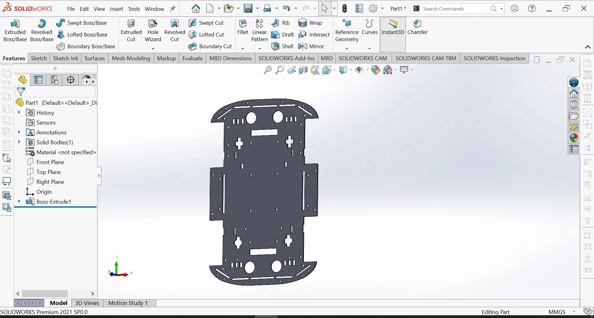
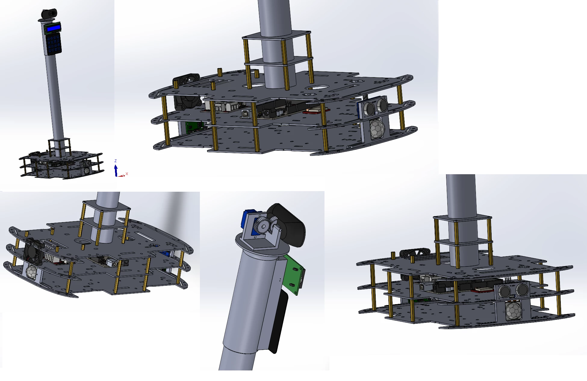
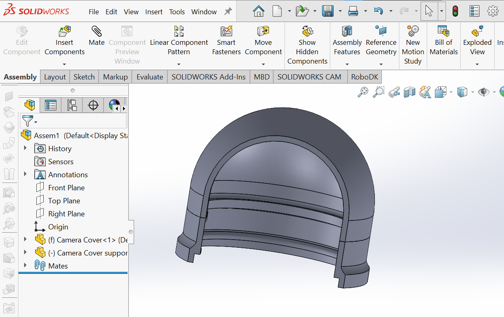
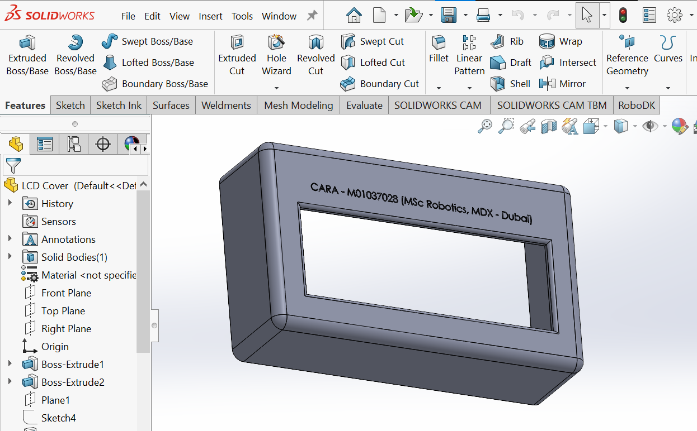
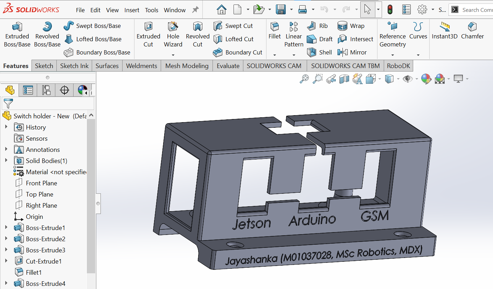
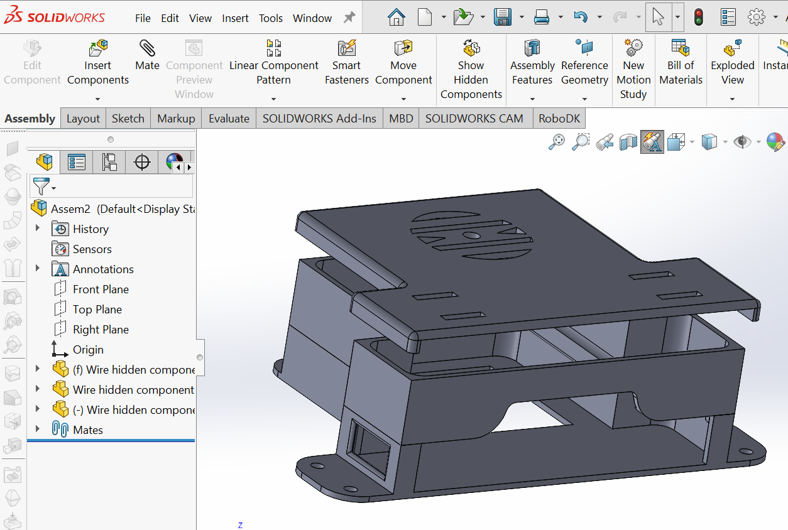

Gallery
System diagrams, circuit schematics, build photos, the web dashboard, and evaluation result charts — updated as the project progresses.
Project Journey
CARA — 14 Weeks So Far
The real wins and setbacks across the build, from finalised architecture in Week 1–2 to the shared-power fault diagnosed in Week 13 and the recovery now underway in Week 14.
System Diagrams

System Architecture Block Diagram
Hardware block diagram — Jetson Nano, Arduino Mega, all sensors, actuators, power rails, and bus connections.
Figure 3-1 · Thesis Chapter 3
ROS Node Graph
Complete ROS Noetic process space on Jetson Nano — 7 nodes, topics, publishers and subscribers.
Figure 3-2 · Thesis Chapter 3
Power System Topology
3S LiPo → buck converters (5V Arduino rail, 6.6V A7670C GSM rail) → boost converter (19V Jetson Nano rail) → L298N motor driver direct 11.1V.
Figure 3-6 · Thesis Chapter 3Build Photos

CARA v1.0 — Full Assembly
Complete robot with chassis, tilt camera head, ultrasonic sensor ring, and all mounted electronics.
Full integration test · Week 9
Electronics Bay
Arduino Mega, Jetson Nano, buck converters, A7670C GSM module, and RFID mounted inside the chassis compartment.
Chassis wiring · Week 8
Camera Tower & Greeting Servo
USB webcam on the fixed camera tower, alongside the MG90S servo used for a one-shot greeting wave gesture. No pan-tilt hardware — camera aiming (left/right) is done by rotating the chassis itself, and there is no vertical/tilt axis at all.
Tower head unit · Week 10Person-Tracking Wristband
The physical wristband for the HSV colour-band person-tracking fallback — built and worn for the first time, closing a gap that had sat as an untuned placeholder since Week 11.
Wristband build · Week 14
Replacement Drive Motors — Bench Test
The new DC gear motors and wheels, wired to the L298N and bench-tested — the fix for the torque/gear-ratio limitation that had left turning as an accepted hardware constraint since Week 09.
Motor bench test · Week 14
Keypad Wiring
The 4×4 matrix keypad used for medication-reminder acknowledgement and patient enrolment, bench-wired to confirm row/column mapping before integration onto the main firmware.
Keypad bring-up · Week 14Software Interface

Web Control Dashboard
The browser-based remote interface — live camera feed, directional drive controls with adjustable speed, patient face-recognition enrolment, and scheduled medicine delivery, all served from the Jetson Nano over the local network.
Remote UI · Week 14
System Action Log
Real command history — every drive, enrolment, and reminder action taken through the dashboard, timestamped with actor, action, and status.
Remote UI · Week 14
Settings Panel
Same-network access link, up to 5 emergency contact numbers for fall/reminder alerts, and the admin password used to unlock the logs and this settings page.
Remote UI · Week 14CAD Design Gallery

Chassis Base Plate
The original flat chassis deck design — wheel wells, mounting-post holes, and sensor cutouts, before any tier stacking or the camera tower.
CAD render · Week 4
Full Prototype Assembly
The complete 3-tier chassis design from multiple angles — camera tower, cooling fan, ultrasonic mounts, and the pan servo bracket, before the finishing covers existed.
CAD render · Week 4
Camera Cover
Housing for the camera module, one of a set of finishing parts designed to turn the working prototype into something closer to a finished product.
CAD render · Week 13
LCD Cover
Housing for the 16×2 display with a clear window cutout, engraved with the project's MSc Robotics attribution.
CAD render · Week 13
Jetson / Arduino / GSM Holder
A combined mounting bracket with three dedicated, labelled bays — tidier internal layout than the original loose wiring.
CAD render · Week 13
Wire Management Tray & Cover
A wire-management piece that tucks cabling out of sight, with a matching cover panel, cutting down on the exposed-wire look of earlier assemblies.
CAD render · Week 13Test Results & Evaluation
Fall
Not Fall
Fall
Not Fall
Fall Detection Accuracy
RandomForestClassifier evaluated on a held-out 20% test split from 644 labelled pose samples (303 fall, 341 not-fall), 5-fold cross-validated at 89.6% (±4.8%).
Chapter 5 · Appendix D (thesis) / E (site)jitter, no movement
usable range
Drive Motor PWM Calibration
Live bench testing found the drive motors don't turn at all below PWM 145 — the whole 0–144 range only jitters. MIN_DRIVE_SPEED and START_SPEED_FLOOR were both set to 145 as a result.
Obstacle Stop-Distance Safety Margin
At the 0.3 m/s max operating speed and ~80ms motor deceleration response time, the robot needs just 2.4cm to stop. The 20cm emergency-stop threshold builds in an 8.3× margin over that calculated minimum.
Chapter 3.8 · Safety Design